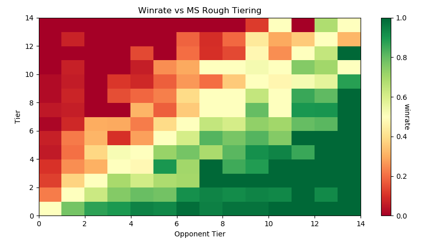

Projects
Table of Contents
- Projects
- Target Domain Data induces Negative Transfer in Multi-Source Classification under Category Shift
- LASTDANCE: Layerwise Activation Similarity to Training Data for Assessing Non-Confirming Events
- Auto-Rating ITG Stamina Charts with Machine Learning
- Input Latency Detection in Expert-Level Gamers
- Making Sense of Melee: The Illusion of Objective Ranks and the Real Impact of Everything
- Plup vs Prince Abu - The Weirdest Set Ever Played
- Michael vs Bananas - The Only Reason We Play Melee
- Bracket Stamina: Inferring the Intent of Other Agents in a Multiplayer Kelly Coin Flip Game
- Locating Visual Jokes in Homestuck with Rudimentary Computer Vision
- Predicting Personality with Playstyle in Super Smash Brothers
- GameCube Controllers in the Era of SmashBox
- Optimizing Health with Cronometer
- SSBM Bracket Projection Algorithm
- Zen in the Art of Ping Pong The Animation
- Do Pot Bonuses Affect Entrant Numbers at Melee Tournaments?
- Violin Plots for KayBeats' "West Coast Bias in SSBMRank, and Why it Doesn't Exist"
Projects
Updated: 11/10/2022
The bulk of the content on this website contains what I consider to be larger projects of mine, scattered around a number of different topics. It might be somewhat too much to navigate naively, especially if you are not interested in one topic or another. As a result, I maintain this page, which is a sort of "highlights reel" of what I consider to be some of my best work across various topics.
To be slightly more precise, I consider this page to be a representative sample of what "good work done by Eryk" means, rather than a list of my 10ish best projects. I figure this makes it more useful than just a resume since most people aren't usually interested in digging around the projects in a resume anyways. If you want to get to know me, and you ask me to show you something cool I did, these represent some good things I might show you.
Target Domain Data induces Negative Transfer in Multi-Source Classification under Category Shift

(Work yet unpublished)
My professional work primarily revolves around Machine Learning, in particular deep learning and computer vision tasks. In this work, we demonstrate that if training data is comprised of multiple domains split per-class (e.g. some classes have domain A, and other classes have domain B), then you will notice significantly hindered performance if one of those domains is the target domain. This is because the network learns to take an "intermediate shortcut" which does not go all the way to the class label (as studied in most shortcut learning papers), but rather narrows down the choices before making a decision. We show that this effect persists even when training with state-of-the-art domain adaptation techniques, suggesting it is a setting warranting further study.
LASTDANCE: Layerwise Activation Similarity to Training Data for Assessing Non-Confirming Events
I am currently enrolled as a part-time Masters Student, and so I do some more academic-focused work in addition to my more directly work-relevant tasks. One such work is LASTDANCE, which was a short research paper I wrote for a class (with a very general "write a research paper" prompt). In this work, I develop an anomaly detection method which works in scenarios where out-of-distribution points will overlap with in-distribution points (e.g. monte carlo dropout), making it unsuitable for both feature- and label-based methods. The pre-preprint can be found here, and the code is available on github.
Auto-Rating ITG Stamina Charts with Machine Learning

I do machine learning in my free time, as well! In this project I used some straightforward classical ML techniques, as well as sequence-to-one models (RNN, LSTM) in order to automatically rate the difficulty of ITG Stamina charts, a 4 panel dance rhythm game similar to Dance Dance Revolution. Code for this project is available on github.
Input Latency Detection in Expert-Level Gamers

My Cognitive Science Senior Thesis at Yale University was a visuomotor perception experiment in which I exposed tournament-level SSBM players (including some top-100 world-ranked players) to precisely timed flashes of light using an arduino microcontroller in order to test their ability to blindly determine the presence of input lag compared to a control group. SSBM tournament matches are all held on CRT Televisions, since even the fastest LCD monitors necessarily add delay in between your input and the picture being displayed, effectively slowing down your reaction time. This has led to certain players to claim they could notice input lag, even at single-digit-millisecond levels. This experiment found a large and significant difference in perceptual ability between tournament-level gamers and a control group, and suggested the existence of such a perceptual effect to be somewhat plausible. A slightly abridged version with additional commentary can be found here.
Making Sense of Melee: The Illusion of Objective Ranks and the Real Impact of Everything

Aside from academic work, I've also done some statistics and data visualization work within the Melee Community under the broad Melee Stats umbrella, for which I am Creative Director. The most prominent of these is Making Sense of Melee - a longform statistics writeup in which I explore a variety of topics, including flaws in popular ranking algorithms, the accuracy of seeding at national tournaments (a topic I was interviewed by ESPN esports about in 2017), and probabilities to win against players at differing skill levels. The post received more than 50,000 hits, reaching #6 on Hacker News.
Plup vs Prince Abu - The Weirdest Set Ever Played

You will occasionally see my name in longform video content, also, where I am probably most known for this video about one of my favorite sets of Super Smash Brothers Melee. The video currently has over 300,000 views on YouTube at the time of writing, and kickstarted our channel, which now has over 25,000 subscribers.
Michael vs Bananas - The Only Reason We Play Melee
A co-project I did with my good friend GimmeDatWheat. This particular set is very famous for the fact that in game 2 neither player played the game at all. We decided it would be good to make a video about the construct of community-defined rules in competitive gaming, and about why people like playing this game at all in the first place.
Bracket Stamina: Inferring the Intent of Other Agents in a Multiplayer Kelly Coin Flip Game

In this work, we outline a multiplayer variant of the Kelly Coin Flip Game, which requires a player to guess the opponent's wager and conserve as many resources as possible. We train a Deep Q-Network to play this game, and substantially outperform a policy which selects a random value to wager. We test this with human players and find that it plays at about average compared to human players playing for the first time, suggesting that a competent social agent may have an advantage at this game compared to a player with no conception of the other player's intent. Code can be found here.
Locating Visual Jokes in Homestuck with Rudimentary Computer Vision

I try to cluster together visually similar panels in Andrew Hussie's webcomic Homestuck using relatively basic Computer Vision techniques. Project explores Hamming Distance, Edge Detection, Perceptual Hashing, K-Means Clustering, Graph Theory, Community Detection, etc. I end up finding a bunch of panels that are redraws of each other. A bit long-winded, since it has my entire problem solving process (failures included) but a pretty cool project of mine.
Predicting Personality with Playstyle in Super Smash Brothers

To get to the bottom of the very common hypothesis that playstyle in Super Smash Brothers correlates in some meaningful way with personality, I conducted an informal survey which administered a Big Five Personality test alongside questions about in-game variables like playstyle or character. After 1754 participants (!) completed the survey, I found a modest but significant relationship between some factors and playstyle question responses.
GameCube Controllers in the Era of SmashBox

In which I wired tact switches to precise analog values on a GameCube controller to emulate SmashBox functionality without sacrificing analog control or previously built muscle memory. The video I made for this project proved extremely controversial, amassing 10,000 views on YouTube and over 200 comments on Reddit.
Optimizing Health with Cronometer

Chronicles my 40-lb weight loss near the end of my undergraduate life. To accomplish this goal (which took only a few months), I read a number of papers in nutritional science, synthesized a game plan, and measured every single piece of food I ate for several months to assess the validity of my approach. I tracked my food intake using Cronometer and adhered to a calorie counting regime for a short while, and at the end made some charts based upon my weight over time and the foods I ate. In the end I lost weight at a constant rate, with the linear regression's R-squared resulting a staggering 0.98, despite not adhering to any specific macronutrient balance.
SSBM Bracket Projection Algorithm

2015 project in which I use past data to write a simple machine learning classifier to predict wins and losses at SSBM tournaments, and outperform basic seed1 > seed2 projections done by smash.gg.
Zen in the Art of Ping Pong The Animation

I analyze Zen themes in the storylines of cult classic sports anime Ping Pong The Animation. If you're more about my empirical projects, this might not be quite up your alley. However, if you've seen the show I'm confident this essay will shed some interesting perspective on it, and if you haven't seen the show then I'm confident you're missing out on one of the best pieces of media ever made.
Do Pot Bonuses Affect Entrant Numbers at Melee Tournaments?

Short writeup on pot bonuses at major tournaments, and their effect on attendance. I use attendance and prize pool data from 60 large tournaments between 2015-2017 and use a number of correlational tests and visualizations in R, ultimately finding no relationship between pot size and major tournament attendance.
Violin Plots for KayBeats' "West Coast Bias in SSBMRank, and Why it Doesn't Exist"

KayB is a Melee Stats denizen, and he wrote a post exploring the supposed "West Coast Bias" in the SSBMRank panel. I collaborated with him by generating Violin Plots (boxplots with kernel density plots overlayed on top of them) of the top 100 ballots, graciously provided by Tafokints.
Some smaller projects and writings of mine are scattered around this website, since I use this website as a sort of journal / garage / desk-with-papers-scattered-all-over it. You can find more about me over at the About page, you can find my Resume Here, and you can keep up with what I'm up to over at the Links page.
And, as always, more to come soon!